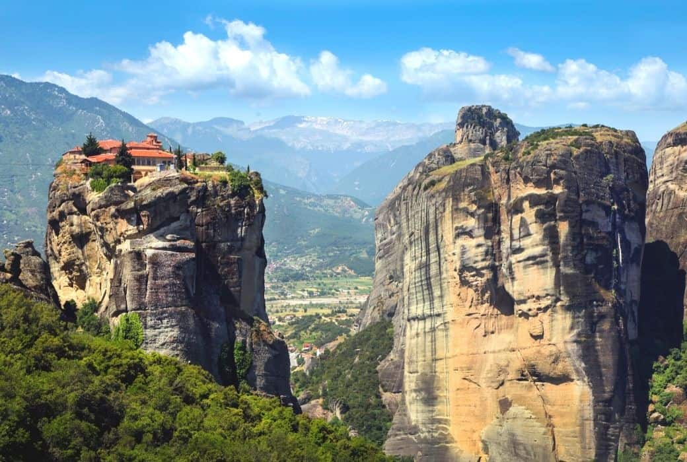

METEORA
The Meteora Monasteries are located close to the city of Kalambaka in Greece, near the Pineois river and the Pindus Mountains, about 360km north of Athens.
The word “Meteora,” means “hovering in the air” which, whilst a literal description of the famous monasteries, also shows just how otherworldly they are.
The complex is made up of twenty-four Eastern Orthodox monasteries that were built on giant sandstone rock pillars between the 14th and 16th centuries.
This UNESCO world heritage site is truly one of the most remarkable and visually beautiful places you will visit anywhere in the world. Even if you only have 1 night to spare on your trip to Greece you will not regret the effort to visit Meteora for a moment!